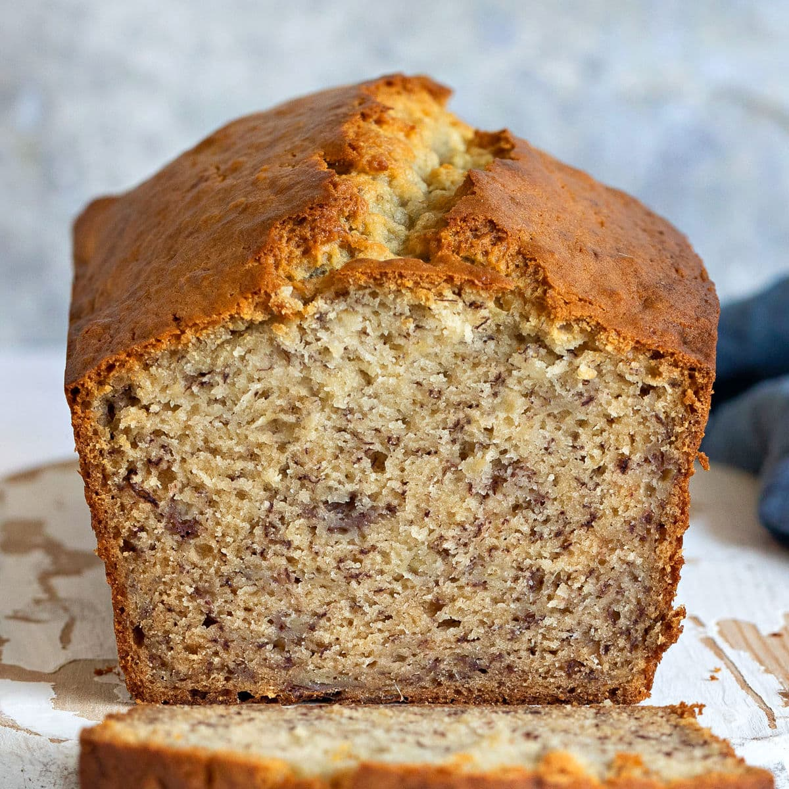

Banana Bread

Description
Ingredients
- 1 2/3 cup all-purpose flour
- 1 teaspoon baking soda
- 1/2 teaspoon baking powder
- 1/4 teaspoon salt
- 3/4 cup white sugar
- 1 tablespoon brown sugar
- 5 tablespoons (1/3 cup) unsalted butter, at room temperature
- 2 eggs
- 1/3 cup milk
- 4 bananas
Steps
- Line your loaf pan with parchment or wax paper, then spray with Pam or any other non-stick spray.
- Preheat the oven to 350F. If your bananas are not overripe, place them on a baking sheet and roast at 350F for 15 min.
- In a bowl, mash the bananas with a large fork. Set aside.
- Spoon the flour and level with a knife into a separate bowl. Mix in baking soda, baking powder, and salt.
- Using a stand mixer, whip butter until soft. Beat in white sugar for about 1 minute. Lower mixer speed.
- Add eggs to butter and sugar mixture one at a time. Beat for about 1 minute after all eggs are added.
- Add mashed bananas and mix until fully incorporated.
- Spoon half of the flour mixture into the mixing bowl. Mix slowly until incorporated.
- Keeping the mixer on slow speed, pour in half of the milk. Repeat, adding the rest of the flour mixture and milk. When all ingredients are in, mix on slow speed for another minute.
- Pour mixture into your parchment-lined loaf pan. Sprinkle brown sugar on the surface of the batter.
- Bake bread for 1 hour. Start checking doneness after about 50 minutes. To check for doneness, insert a skewer into the loaf. If the skewer comes out dry with few/no crumbs stuck to it, the cake is done.